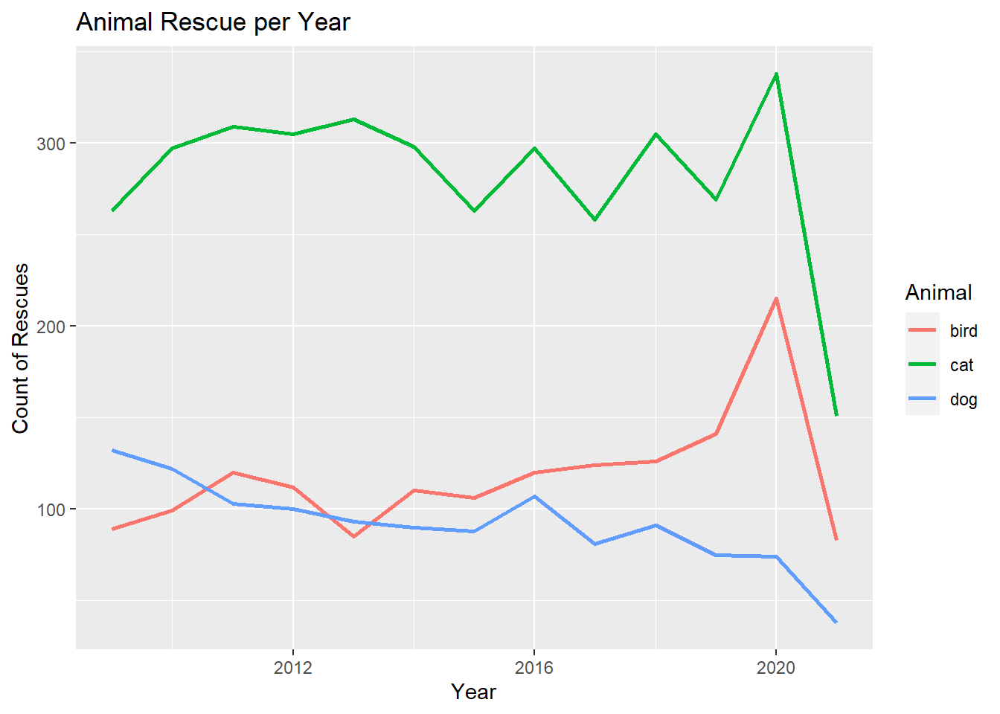

library(tidyverse)
library(lubridate)
library(tidytuesdayR)3 Wrangling dates-time data
NSC-R Tidy Tuesday February 2022
3.1 Introduction
The dataset for this Tidy Tuesday is about animal rescues! Alex Trinidad explores the temporal trends of animal rescues using lubridate package (Grolemund & Wickham, 2011) (Trinidad, n.d.)
3.2 Load packages and data
Install TT package (if necessary)
install.packages("tidytuesdayR")
install.packages("tidyverse")Download data.
mydatalist <- tidytuesdayR::tt_load("2021-06-29")
Downloading file 1 of 1: `animal_rescues.csv`Data as tbl
mydata <- mydatalist$animal_rescues3.3 Explore the data
glimpse(mydata)Rows: 7,544
Columns: 31
$ incident_number <dbl> 139091, 275091, 2075091, 2872091, 355309~
$ date_time_of_call <chr> "01/01/2009 03:01", "01/01/2009 08:51", ~
$ cal_year <dbl> 2009, 2009, 2009, 2009, 2009, 2009, 2009~
$ fin_year <chr> "2008/09", "2008/09", "2008/09", "2008/0~
$ type_of_incident <chr> "Special Service", "Special Service", "S~
$ pump_count <chr> "1", "1", "1", "1", "1", "1", "1", "1", ~
$ pump_hours_total <chr> "2", "1", "1", "1", "1", "1", "1", "1", ~
$ hourly_notional_cost <dbl> 255, 255, 255, 255, 255, 255, 255, 255, ~
$ incident_notional_cost <chr> "510", "255", "255", "255", "255", "255"~
$ final_description <chr> "Redacted", "Redacted", "Redacted", "Red~
$ animal_group_parent <chr> "Dog", "Fox", "Dog", "Horse", "Rabbit", ~
$ originof_call <chr> "Person (land line)", "Person (land line~
$ property_type <chr> "House - single occupancy", "Railings", ~
$ property_category <chr> "Dwelling", "Outdoor Structure", "Outdoo~
$ special_service_type_category <chr> "Other animal assistance", "Other animal~
$ special_service_type <chr> "Animal assistance involving livestock -~
$ ward_code <chr> "E05011467", "E05000169", "E05000558", "~
$ ward <chr> "Crystal Palace & Upper Norwood", "Woods~
$ borough_code <chr> "E09000008", "E09000008", "E09000029", "~
$ borough <chr> "Croydon", "Croydon", "Sutton", "Hilling~
$ stn_ground_name <chr> "Norbury", "Woodside", "Wallington", "Ru~
$ uprn <chr> "NULL", "NULL", "NULL", "1.00021E+11", "~
$ street <chr> "Waddington Way", "Grasmere Road", "Mill~
$ usrn <chr> "20500146", "NULL", "NULL", "21401484", ~
$ postcode_district <chr> "SE19", "SE25", "SM5", "UB9", "RM3", "RM~
$ easting_m <chr> "NULL", "534785", "528041", "504689", "N~
$ northing_m <chr> "NULL", "167546", "164923", "190685", "N~
$ easting_rounded <dbl> 532350, 534750, 528050, 504650, 554650, ~
$ northing_rounded <dbl> 170050, 167550, 164950, 190650, 192350, ~
$ latitude <chr> "NULL", "51.39095371", "51.36894086", "5~
$ longitude <chr> "NULL", "-0.064166887", "-0.161985191", ~Do we have missing data?
summary(mydata) incident_number date_time_of_call cal_year fin_year
Min. : 4149 Length:7544 Min. :2009 Length:7544
1st Qu.: 49306118 Class :character 1st Qu.:2012 Class :character
Median : 89438626 Mode :character Median :2015 Mode :character
Mean : 91854662 Mean :2015
3rd Qu.:131567118 3rd Qu.:2018
Max. :233284091 Max. :2021
NA's :3478
type_of_incident pump_count pump_hours_total hourly_notional_cost
Length:7544 Length:7544 Length:7544 Min. :255.0
Class :character Class :character Class :character 1st Qu.:260.0
Mode :character Mode :character Mode :character Median :298.0
Mean :301.3
3rd Qu.:333.0
Max. :352.0
incident_notional_cost final_description animal_group_parent
Length:7544 Length:7544 Length:7544
Class :character Class :character Class :character
Mode :character Mode :character Mode :character
originof_call property_type property_category
Length:7544 Length:7544 Length:7544
Class :character Class :character Class :character
Mode :character Mode :character Mode :character
special_service_type_category special_service_type ward_code
Length:7544 Length:7544 Length:7544
Class :character Class :character Class :character
Mode :character Mode :character Mode :character
ward borough_code borough stn_ground_name
Length:7544 Length:7544 Length:7544 Length:7544
Class :character Class :character Class :character Class :character
Mode :character Mode :character Mode :character Mode :character
uprn street usrn postcode_district
Length:7544 Length:7544 Length:7544 Length:7544
Class :character Class :character Class :character Class :character
Mode :character Mode :character Mode :character Mode :character
easting_m northing_m easting_rounded northing_rounded
Length:7544 Length:7544 Min. :500050 Min. :157050
Class :character Class :character 1st Qu.:524750 1st Qu.:175150
Mode :character Mode :character Median :531650 Median :181250
Mean :531243 Mean :180725
3rd Qu.:537750 3rd Qu.:186750
Max. :571350 Max. :200750
latitude longitude
Length:7544 Length:7544
Class :character Class :character
Mode :character Mode :character
Create a unique ID
mydata <- mydata |>
arrange(cal_year) |>
mutate(uid = paste0(seq(1:n()), LETTERS, letters))Are there any duplicated?
table(duplicated(mydata$uid))
FALSE
7544 Select variables of interest.
mydataselection <- mydata |>
select(uid, date_time_of_call, type_of_incident, animal_group_parent, borough_code)Show me the frequencies of different types of animal.
myfreq <- mydataselection |>
group_by(animal_group_parent) |>
summarise(freq = n()) |>
arrange(-freq)
myfreq# A tibble: 28 x 2
animal_group_parent freq
<chr> <int>
1 Cat 3649
2 Bird 1530
3 Dog 1194
4 Fox 349
5 Horse 193
6 Unknown - Domestic Animal Or Pet 191
7 Deer 130
8 Unknown - Wild Animal 89
9 Squirrel 65
10 Unknown - Heavy Livestock Animal 49
# ... with 18 more rowsRemove unkonwn type of animals from the dataset.
mydataselection <- mydataselection |>
filter(!grepl("Unknown", animal_group_parent))myfreq <- mydataselection |>
group_by(animal_group_parent) |>
summarise(freq = n()) |>
arrange(-freq)Merging the cat counts.
mydataselection$animal_group_parent <- recode(mydataselection$animal_group_parent,
"cat" = "Cat")Another way to do this (Nick van Doormaal suggestion).
mydataselection$animal_group_parent <- tolower(mydataselection$animal_group_parent)3.4 Working with Date-Time Data
Now we are ready to work with Data-Time Data. We want to separate the date in year, month, day, hour….
But, what variable type is the date in our data set?
glimpse(mydataselection)Rows: 7,211
Columns: 5
$ uid <chr> "1Aa", "2Bb", "3Cc", "4Dd", "5Ee", "7Gg", "8Hh", "~
$ date_time_of_call <chr> "01/01/2009 03:01", "01/01/2009 08:51", "04/01/200~
$ type_of_incident <chr> "Special Service", "Special Service", "Special Ser~
$ animal_group_parent <chr> "dog", "fox", "dog", "horse", "rabbit", "dog", "do~
$ borough_code <chr> "E09000008", "E09000008", "E09000029", "E09000017"~If not “date” format, transform ir
mydatadate <- mydataselection |>
mutate(datetime = lubridate::as_datetime(date_time_of_call,
format = "%d/%m/%Y %H:%M"))
# # Non-lubridate Alternative
# mydatadate <- mydataselection |>
# mutate(datetime = strptime(date_time_of_call,
# format ="%d/%m/%Y %H:%M",
# tz = "Europe/London"))
# OlsonNames() # function for for the tzCreate separate variables for day, month, year, hour, minute, and date.
mydatadate <- mydataselection |>
mutate(datetime = as_datetime(date_time_of_call,
format ="%d/%m/%Y %H:%M"),
day = day(datetime),
month = month(datetime),
year = year(datetime),
hour = hour(datetime),
minute = minute(datetime),
date = as_date(datetime))
head(mydatadate[, 6:12])# A tibble: 6 x 7
datetime day month year hour minute date
<dttm> <int> <dbl> <dbl> <int> <int> <date>
1 2009-01-01 03:01:00 1 1 2009 3 1 2009-01-01
2 2009-01-01 08:51:00 1 1 2009 8 51 2009-01-01
3 2009-01-04 10:07:00 4 1 2009 10 7 2009-01-04
4 2009-01-05 12:27:00 5 1 2009 12 27 2009-01-05
5 2009-01-06 15:23:00 6 1 2009 15 23 2009-01-06
6 2009-01-07 06:29:00 7 1 2009 6 29 2009-01-07How many cases do we have now per day?
caseperday <- mydatadate |>
group_by(date) |>
summarise(resc_counts = n())Plot trends of cases
ggplot(data = caseperday,
aes(
x = date,
y = resc_counts
)) +
geom_line()And how many cases do we have per year?
mydatadate |>
group_by(year) %>%
summarise(resc_counts = n()) |>
ggplot() +
aes(
x = year,
y = resc_counts
) +
geom_line()Is there a rescue every day?
perday <- mydatadate |>
group_by(date) |>
summarise(resc_counts = n())How many days are (more or less) in those years?
length(unique(mydatadate$year)) * 365[1] 4745How can I know the days that are missing? Create for this a data set with all the days
compdates <- data.frame(date = c(seq(ymd('2009-01-01'),
ymd('2021-12-31'), by = '1 day')))How can I know the days that are missing? Create for this a data set with all the days
compdates <- data.frame(date = c(seq(ymd('2009-01-01'),
ymd('2021-12-31'), by = '1 day')))Save missing dates
missingdates <- anti_join(compdates, perday)Add missing dates to our data set.
fulldates <- rbind(perday, missingdates) #This will give an error because we need the same arguments We need the same arguments
missingdates <- missingdates %>%
mutate(resc_counts = vector(mode = "numeric", length = length(.)))Add now the missing dates to our data set
fulldates <- rbind(perday, missingdates)Are any date duplicated?
table(duplicated(fulldates$date))
FALSE
4748 Wim Bernasco’s suggestion instead of using anti_join() and rbind(), use left_join.
fulldates <- left_join(compdates, perday, by = "date") %>%
replace(is.na(.), 0)Separate the date ymd
fulldates <- fulldates %>%
mutate(year = year(date),
month = month(date),
day = day(date))What week of the year did it happen?
fulldates <- fulldates %>%
mutate(week = week(date))What day of the week did it happen?
fulldates <- fulldates %>%
mutate(weekday = wday(date, label = TRUE))4 Plotting results
Plot by week.
byweek <- fulldates %>%
group_by(year, week) %>%
summarise(resc_counts = sum(resc_counts))ggplot(data = byweek) +
geom_line(aes(x = week, y = resc_counts), size = 1) +
facet_wrap(vars(year),scales = "free_x") Plot Trends by Type of Animal, so accounting the type of animals.
First cat
cat <- mydatadate %>%
filter(animal_group_parent == "cat") %>%
group_by(date, animal_group_parent) %>%
summarise(resc_counts = n())
mdatecat <- anti_join(compdates, cat)
fullcat <- rbind(cat, mdatecat) %>%
mutate(animal_group_parent = "cat") %>%
replace(is.na(.),0)Dog now.
dog <- mydatadate %>%
filter(animal_group_parent == "dog") %>%
group_by(date, animal_group_parent) %>%
summarise(resc_counts = n())
mdatedog <- anti_join(compdates, dog)
fulldog <- rbind(dog, mdatedog) %>%
mutate(animal_group_parent = "dog") %>%
replace(is.na(.),0)Bird now.
bird <- mydatadate %>%
filter(animal_group_parent == "bird") %>%
group_by(date, animal_group_parent) %>%
summarise(resc_counts = n())
mdatebird <- anti_join(compdates, bird)
fullbird <- rbind(bird, mdatebird) %>%
mutate(animal_group_parent = "bird") %>%
replace(is.na(.),0)Three datasets together.
myfulldata <- rbind(fullcat,fulldog, fullbird)Dates by components
myfulldata <- myfulldata %>%
mutate(day = day(date),
month = month(date, label = TRUE),
year = year(date),
week = week(date),
weekday = wday(date, label = TRUE))By day of the week
bywday <- myfulldata %>%
group_by(year, weekday, animal_group_parent) %>%
summarise(resc_counts = sum(resc_counts))What levels are in weekday?
levels(bywday$weekday)[1] "zo" "ma" "di" "wo" "do" "vr" "za"Order these levels.
levelorder <- c("Mon", "Tue", "Wed", "Thu", "Fri", "Sat", "Sun")ggplot(data = bywday) +
geom_line(aes(x = factor(weekday, level = levelorder),
y = resc_counts,
group = animal_group_parent,
color = animal_group_parent), size = 1) +
facet_wrap(vars(year), scales = "free_x")+
labs(
title = "Animal Rescue per Weekday",
x = "Weekday",
y = "Count of Rescues",
color = "Animal"
)By week of the year
myfulldata <- myfulldata %>%
mutate(weekyear = paste0(week,month,day))byweek <- myfulldata %>%
group_by(year, weekyear, animal_group_parent) %>%
summarise(resc_counts = sum(resc_counts))Plot it.
ggplot(data = byweek) +
geom_line(aes(x = weekyear,
y = resc_counts,
group = animal_group_parent,
color = animal_group_parent), size = 1) +
facet_wrap(vars(year), scales = "free_x") +
labs(
title = "Animal Rescue per Week",
x = "Week",
y = "Count of Rescues",
color = "Animal"
)By month of the year
bymonth <- myfulldata %>%
group_by(year, month, animal_group_parent) %>%
summarise(resc_counts = sum(resc_counts))ggplot(data = bymonth) +
geom_line(aes(x = month,
y = resc_counts,
group = animal_group_parent,
color = animal_group_parent), size = 1) +
facet_wrap(vars(year), scales = "free_x") +
labs(
title = "Animal Rescue per Month",
x = "Month",
y = "Count of Rescues",
color = "Animal"
)By year
byyear <- myfulldata %>%
group_by(year,animal_group_parent) %>%
summarise(resc_counts = sum(resc_counts))ggplot(data = byyear) +
geom_line(aes(x = year,
y = resc_counts,
group = animal_group_parent,
color = animal_group_parent), size = 1) +
labs(
title = "Animal Rescue per Year",
x = "Year",
y = "Count of Rescues",
color = "Animal"
)
5 References
Trinidad, A. (n.d.). NSC-R Workshops: NSC-R Tidy Tuesday. NSCR. Retrieved from https://nscrweb.netlify.app/posts/2022-02-22-nsc-r-tidy-tuesday/